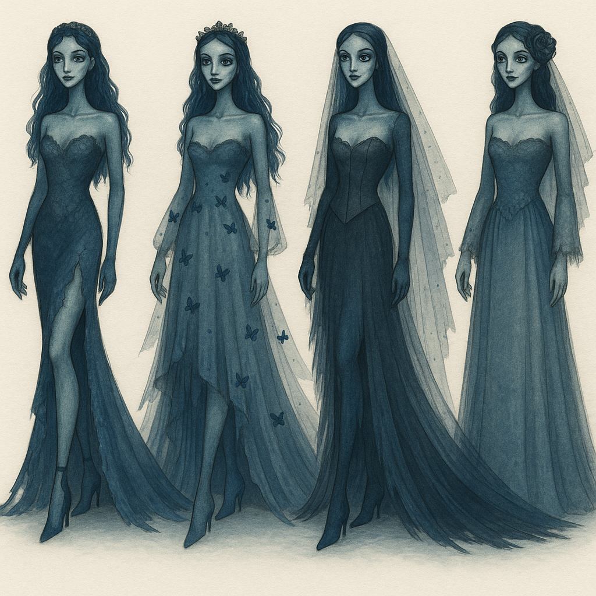
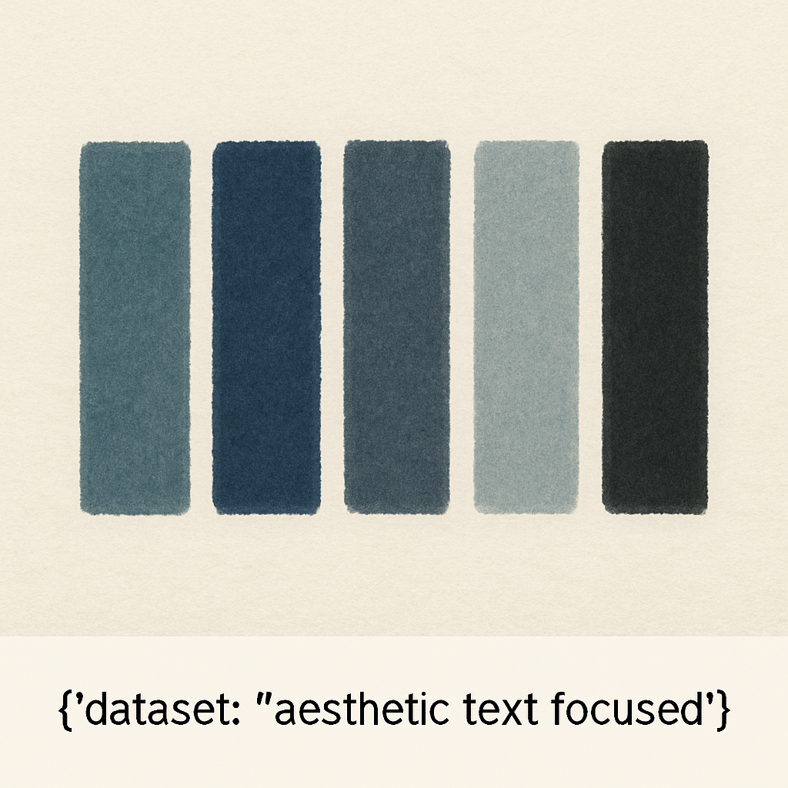

Emily
A coleção "Emily" é inspirada no universo poético, sombrio e romântico de A Noiva-Cadáver de Tim Burton. Esta narrativa gótica mistura morte e beleza com uma estética etérea e teatral. Tons de azul profundo, preto, branco envelhecido e cinzas perolados são predominantes, trazendo o universo sombrio à vida com leveza e encantamento.
Paleta de Cores
- Azul acinzentado médio
- Azul-marinho profundo
- Cinza-azulado escuro
- Cinza-azulado claro
- Preto com toque azulado
Materiais
- Aplicações 3D de borboletas
- Renda: Para dar aquele toque romântico e etéreo, especialmente nas mangas e detalhes do busto.
- Tule e organza: Camadas leves e translúcidas que criam movimento.
- Cetim e chiffon: Para dar caimento fluido e acabamento sofisticado.
- Veludo molhado: Para uma peça mais dramática ou com textura mais rica.
- Detalhes em bordado ou aplicações (ex.: borboletas): Bordados delicados e aplicações em 3D combinam bem com o tema.

